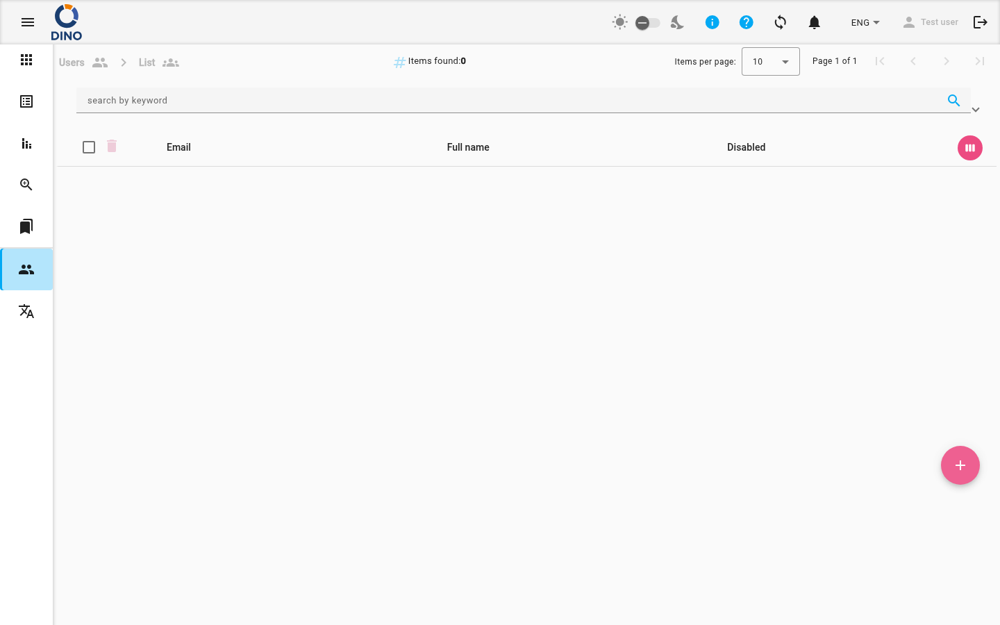

Users List
The Users List page provides a complete list of all user accounts in your Dino organization. From here, you can view user details, edit accounts, and create new users.

Understanding the Users List
The main list displays key information for each user:
- Email: The user's login email address.
- Full Name: The name associated with the account.
- Disabled: A toggle indicating if the account is active or disabled. You can click this toggle directly in the list to change the status.
You can sort the list by the Creation Date column. The ID column is hidden by default.
Working with the List
Searching and Filtering
Use the search bar at the top of the page to find users by their email or full name.
To apply more specific filters:
- Click the filter icon in the search bar.
- In the User Permission Groups section, you can select one or more user groups to filter the list to show only members of those groups.
User Actions
Each user row has an action menu (three vertical dots) on the right side. Click it to access the following options:
- Edit: Open the user editor to modify the account details.
- Delete: Permanently remove the user account. You will be asked to confirm this action.
- View: Open a read-only view of the user's details.
You can also click anywhere on a user's row to select it, or click the expand icon to view a summary of the user's information directly in the list.
Creating a New User
To add a new user to your organization:
- Click the blue + floating button in the bottom-right corner of the screen.
- A form will open. Enter the new user's details, including email, name, and assign them to the appropriate user groups. For more information on groups, see Groups List.
- Click Save to create the account. The new user will receive an email with instructions to set their password.
Offline Restriction
The + button will be disabled (showing a Wi-Fi off icon) if you are not connected to the internet. New user accounts cannot be created while offline. You can still view and edit existing users offline.
Editing a User
To modify an existing user's information:
- Click the action menu (three dots) on the user's row.
- Select Edit.
- In the editor, update any of the user's details or group assignments.
- Click Save to apply the changes.
Quick Disable
You can quickly enable or disable a user's ability to log in by clicking the Disabled toggle switch directly in the list, without opening the full editor.